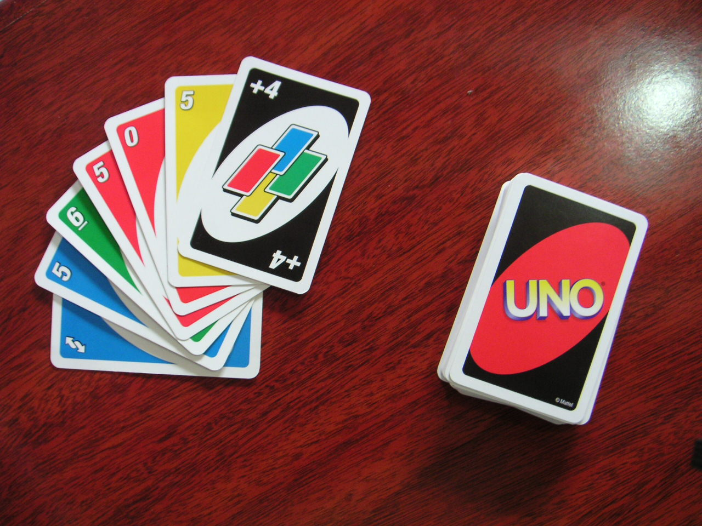

UNO CARDS GAME!
UNO is a popular card game played with 2-10 players and it is played
with a specially printed deck of cards.It is a perfect ice breaker for a get together and is one of the most beloved card
games in the world.
- You need to have 2-10 players per round
- Shuffle the deck of cards and give out 7 cards to each player
- Place the remaining cards face down to create the draw pile
- Select a player to go first and from their take turns clockwise
- The first player will take a card from the draw pile and place it on the table
- Start playing with the color that was drawn from the pile and you can change the color if you have a card in a different
color but with the same number.
- During the game a player might drop a +2 card with the same color as the color scheme and the opponent next to him has to
draw 2 cards.
- In another case a player might drop an uno reverse card with the same color as the color scheme which would reverse the game
order counter clockwise
- A player could also drop a not your turn card which will not allow the next player to take their turn
- During the game a player can drop a wild card which will allow them to change the color scheme of the game with the color of their
choice
- If a player drops a 4+ wild card, the player playing after him will have to draw 4 cards and the player that dropped the card
will change the color scheme to the color of their choice
- When a player has only one card left they have to yell out "UNO!" which alerts everyone that they only have one card till they win,
and if they don't then they will have to draw 2 more cards.
- Lastly, the first player with no cards left is the winner
UNO website

how to play uno video